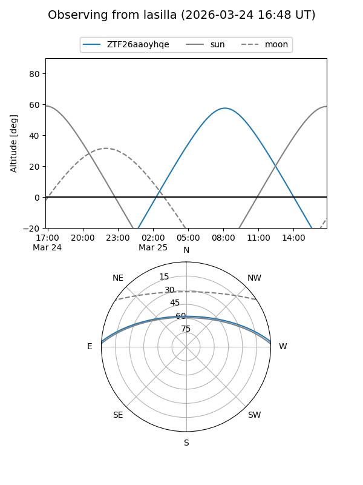
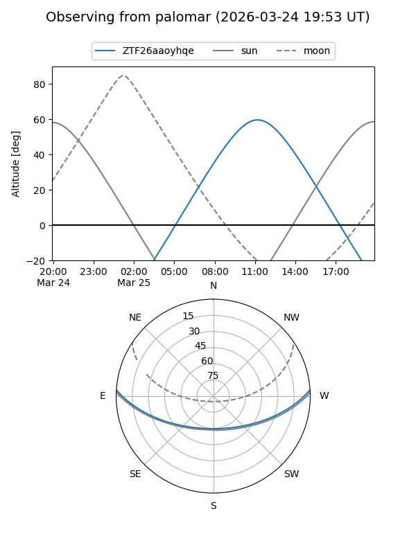

ZTF26aaoyhqe
Target ZTF26aaoyhqe at 2026-03-25 12:54
Aliases and brokers:
FINK: link
Lasair: link
ALeRCE: link
alt names
ZTF26aaoyhqe (ztf,fink_ztf)
Coordinates:
equatorial (ra, dec) = 233.7745,+3.16209
equatorial (HMS+DMS) = 15:35:05.88,+03:09:43.52
galactic (l, b) = (8.6541,+44.16093)
Flags:
Photometry:
last ztfg=17.52, ztfr=16.94
1 ztfg, 1 ztfr detections
Lightcurve
Visibility


Additional plots